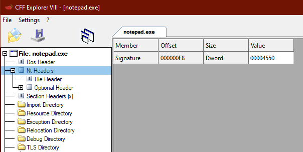

PE Header
The PE Header identifies the file as a PE file, and contains offsets to the
COFF Header and
PE Optional Header.
https://docs.microsoft.com/en-us/windows/win32/api/winnt/ns-winnt-image_nt_headers32PIMAGE_DOS_HEADER dos_header = NULL;
PIMAGE_NT_HEADERS pe_header = NULL;
dos_header = file_buffer;
pe_header = (PIMAGE_NT_HEADERS)((DWORD_PTR)dos_header + (DWORD_PTR)dos_header->e_lfanew);
printf("PE header @ 0x%p \n", pe_header);
printf("\t signature: %x \n", pe_header->Signature);
printf("\t offset to COFF header: 0x%p \n", pe_header->FileHeader);
printf("\t offset to PE optional header: 0x%p \n", pe_header->OptionalHeader);
### Values of Interest
Signature ◇ identifies the file as a PE file
◇ should be "PE\0\0" - 0x4550
FileHeader ◇ offset to the COFF header
OptionalHeader ◇ offset to the PE Optional Header